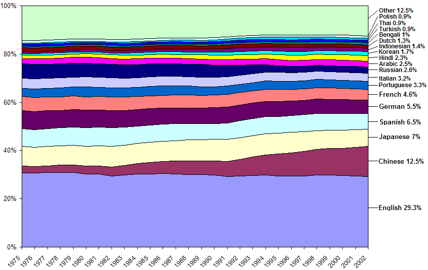
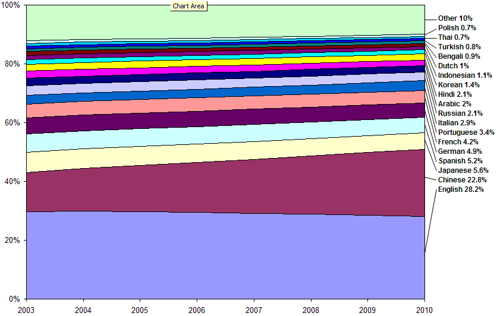

| Version | 1 |
| Authors | Mark Davis |
| Date | 2003-01-22 |
| This Version | http://www.unicode.org/notes/tn13/tn13-1.html |
| Previous Version | none |
| Latest Version | http://www.unicode.org/notes/tn13 |
While English is a major language, it only accounts for around 30% of the world Gross Domestic Product (GDP), and is likely to account for less in the future.
This document is a Unicode Technical Note. It is supplied purely for informational purposes and publication does not imply any endorsement by the Unicode Consortium. For general information on Unicode Technical Notes, see http://www.unicode.org/notes.
Many people in the software industry don't realize how important it is to localize products for different languages around the world. While English is a major language, it only accounts for around 30% of the world Gross Domestic Product (GDP), and is likely to account for less in the future. Neglecting other languages means ignoring quite significant potential markets.
This short article provides one picture of the economic significance of different languages, with a breakdown of the percentages of world GDP by language. Not only does it show the current breakdown, but it also provides data for the years 1975 to 2002 to show modern trends. The most notable feature is the steady rise of Chinese and slow relative decline of Japanese and most European languages. Korean and Indic languages also show growth over that period, though slower than Chinese.
Figure 1: GDP by Language 1975-2002

The GDP values are expressed in terms of Purchasing Power Parity (PPP), which accounts for price differences between countries; for more about PPP, see [WorldBank].
The Other field is the accumulated total for languages for which there is data, but where each has less than 0.9% of the world GDP. It is provided below. While each language separately corresponds to a small percentage, their total is significant (about the same as Chinese). In general, the data is less reliable for smaller languages, so the order should not be taken as significant.
Tagalog, Afrikaans, Persian, Swedish, Ukrainian, Malay, Telugu, Greek, Marathi, Tamil, Vietnamese, Cantonese, Urdu, Norwegian, Danish, Czech, Hebrew, Catalan, Romanian, Hungarian, Gujarati, Finnish, Turkic, Punjabi, Kannada, Other Indic, Malayalam, Oriya, Slovak, Galician, Bulgarian, Byelorussian, Croatian, Amharic, Sindhi, Sinhalese, Assamese, Nepali, Kurdish, Kazakh, Uzbek, Slovenian, Pashto (Pushto), Luxembourgish, Azerbaijani, Latvian (Lettish), Cambodian, Turkmen, Basque, Estonian, Albanian, Balochi, Malagasy, Lithuanian, Armenian, Kinyarwanda, Swahili, Laothian, Macedonian, Icelandic, Luri, Georgian, Serbian, Tajik, Hindko, Moldavian, Konkani, Sesotho, Mongolian, Manipuri, Kirghiz, Maltese, Brahui, Chichewa, Croatian, Kirundi, Afar, Rhaeto-Romance, Samoan, Tonga,...
Ideally, one would determine the proportion of world GDP allocated to each person in the world, and apportion that to different languages on the basis of the languages that person speaks during average working hours. One can approximate that process with the available data: GDP for countries and proportions of language speakers in each country.
The GDP data for different countries comes from the World Bank [WorldBank]. Where data is missing for a given year, it is interpolated on the basis of the percentage of world GDP before and/or after the missing year (all of these are for countries with relatively small GDPs, so they don't materially affect the data for the top languages shown above).
The assignment of GDP to languages is based on the percentage of language speakers within each country. This was based on the [Factbook] where it had available data, and supplemented with other sources such as [CensusIndia] or [Ethnologue] where it did not. For example, the GDP of India is split as follows:
Hindi 40.22% Bengali 8.30% Telugu 7.87% Marathi 7.45% Tamil 6.32% Urdu 5.18% Gujarati 4.85% Kannada 3.90%...
Apportionment by speakers is clearly an approximation, since it is unlikely that economic activity would be evenly distributed by language. Multinational companies that contribute significantly to the economy may use a different working company language; for example, the working language of the Finnish company Nokia is English. In particular, the economic activity ascribed to English is probably somewhat low, because of the leading role it plays in global commerce as a second language. It is not, for example, listed in [CensusIndia] even though it clearly plays a key economic role in India. Similarly, French plays an important role in the Maghreb countries (both in business and government), as does Russian in former-USSR countries.
Yet despite these caveats, the information is accurate enough that the above chart can give an overall picture of the relative levels of economic activity in different languages, and their growth over time.
An interesting recent paper from Goldman Sachs [Brics2050] does project that the combined GDP of the BRIC countries (Brazil, Russia, India, and China) will exceed that of the current G6 (United States, Japan, Germany, France, United Kingdom, and Italy) before the year 2050. The following chart uses that data to extrapolate what the GDP by Language breakdown would be over the coming years. Chinese would have increasing weight, as in the following chart; Russian, Portuguese, and Indic would all increase as well, but most significantly after 2010.
Caution: this data is much more speculative:
- Because [Brics2050] doesn't have data for languages outside of the BRIC and G6 countries, the values for those languages are interpolated.
- The data from [Brics2050] is in constant dollars, not PPP. Because internal costs will presumably rise with growth, this would cause the projected PPP of a high-growth country like China to be overstated in the chart.
- Because of these issues with the data, the chart only covers the next few years, not all the way out to 2050.
Figure 2: GDP by Language 2003-2010

Thanks to Patrick Andries, Alan Liu, Markus Scherer, Marcia Stockton, Sue Williams, and François Yergeau for their comments on versions of this document or data.
| [Brics2050] | Dreaming With BRICs: The Path to 2050 Goldman Sachs, Global Economics Paper No: 99 http://www.gs.com/insight/research/reports/99.pdf |
| [CensusIndia] | Census of India, Govt. of India - Ministry of Home Affairs http://www.censusindia.net/ |
| [Factbook] | CIA - The World Factbook http://www.cia.gov/cia/publications/factbook/ |
| [Ethnologue] | Ethnologue, Languages of the World http://www.ethnologue.com/ |
| [GDP] | GDP (PPP) by Language (this paper) http://www.macchiato.com/economy/GDP_PPP_by_language.html |
| [ICU] | IBM's International Components for Unicode (for more on software globalization) http://www.icu-project.org/ |
| [Unicode] | The Unicode Consortium (for more on software globalization) http://www.unicode.org |
| [WorldBank] | World Bank Group: Data and Statistics http://www.worldbank.org/data/ |
The following summarizes modifications from the previous version of this document.
| 2008-10-01 | Updated stale links in version 1 |
| 1 | Initial version |
Copyright © 2004 Unicode, Inc and Mark Davis. All Rights Reserved. The Unicode Consortium and Mark Davis make no expressed or implied warranty of any kind, and assume no liability for errors or omissions. No liability is assumed for incidental and consequential damages in connection with or arising out of the use of the information or programs contained or accompanying this technical note. The Unicode Terms of Use apply.
Unicode and the Unicode logo are trademarks of Unicode, Inc., and are registered in some jurisdictions.